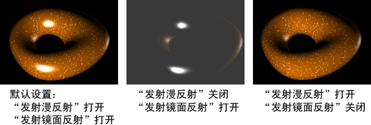
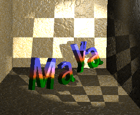

根据设置这些选项的编辑器，您可能会看到以下所有属性或其子集：
聚光灯“灯光形状”(Light Shape)示例
“属性编辑器”(Attribute Editor)中的“spotLightShape”选项卡还包含一个“灯光形状”(Light Shape)示例。此示例显示了聚光灯投射的形状和灯光的强度。以下显示了默认的形状和强度。
- 类型(Type)
-
单击箭头，从下拉列表中选择一种灯光类型。当您更改灯光的类型时，只有那些为这两个类型所共有的属性会保留以前的值或设置。非共有属性的值和设置将丢失。当您更改灯光的灯光类型时，灯光的位置也将保留。
- 颜色(Color)
-
设置灯光的颜色。单击样例以在“颜色选择器”(Color Chooser)中更改灯光的颜色或将纹理映射到灯光。如果映射纹理，灯光将对它进行投影（取决于灯光“类型”(Type)）。默认设置为白色。以下显示当您将渐变纹理映射到环境光的“颜色”(Color)属性时的渲染结果。

- 强度(Intensity)
-
表示灯光的亮度。“强度”(Intensity)值为 0 的灯光不发光。“强度”(Intensity)值为负值的灯光从受灯光影响的区域中的场景移除灯光。该滑块范围是 0 到 10，但您可以键入更大值以获得更亮的灯光（例如，20）。默认值是 1。
提示： 使用负“强度”(Intensity)值减少或移除强光点或眩光。 - 默认照明(Illuminates by Default)
-
如果启用该选项，灯光将照亮所有对象并包含在 defaultLightSet 中。如果禁用该选项，灯光仅照亮其链接到的对象。默认情况下“默认照明”(Illuminates by Default)处于启用状态。
- “发射漫反射”(Emit Diffuse)和“发射镜面反射”(Emit Specular)
-
默认情况下“发射漫反射”(Emit Diffuse)和“发射镜面反射”(Emit Specular)处于启用状态。禁用这两个选项将对灯光禁用漫反射和镜面反射着色结果。
注：结果不会显示在场景视图中。若要查看结果，请在“渲染视图”(Render View)中测试渲染。
若要同时对多个灯光启用或禁用漫反射和镜面反射着色，请使用“渲染标志”(Rendering Flags)窗口（“窗口 > 渲染编辑器 > 渲染标志”(Windows > Rendering Editors > Rendering Flags)）。
- 衰退速率(Decay Rate)
-
控制灯光的强度随着距离而下降的速度。“衰退速率”(Decay Rate)设置对于小于 1 个单位的距离没有影响。默认设置为“无衰退”(No Decay)。
有关灯光衰退的详细信息，请参见灯光衰退。
提示：“衰退速率”(Decay Rate)还将控制雾的亮度是如何从光源处随着距离而下降的。
在“属性编辑器”(Attribute Editor)，单击箭头显示下拉列表，并选择“衰退速率”(Decay Rate)在选项窗口中，键入一个值或使用滑块。
无衰退(No Decay)
无衰退；灯光将会照到所有对象
线性(Linear)
灯光强度将随着距离而直接（以线性方式）下降（比真实世界灯光要慢）。
二次方(Quadratic)
灯光强度将与距离的平方成比例地下降（与真实世界灯光等速）
立方(Cubic)
灯光强度将与距离的立方成比例地下降（比真实世界灯光要快）
- 圆锥体角度(Cone Angle)
-
聚光灯光束边到边的角度（度）。有效范围是 0.006 到 179.994。默认值为 40。
- 半影角度(Penumbra Angle)
-
聚光灯光束的边的角度（度），在该边上，聚光灯的强度以线性方式下降到零。有效范围是 -179.994 到 179.994。滑块范围是 -10 到 10。默认值为 0。
例如，若“圆锥体角度”(Cone Angle)值为 50 且“半影角度”(Penumbra Angle)值为 10，则聚光灯的有效扩散为70 (50 + 10 + 10) 度；但是，50 度角和 70 度角之间的聚光灯强度降为 0。若“圆锥体角度”(Cone Angle)值为 50 且“半影角度”(Penumbra Angle)值为 -10，则聚光灯的有效扩散为 50 度，并且，30 度角和 50 度角之间的聚光灯强度降为 0。
- 衰减(Dropoff)
-
控制灯光强度从聚光灯光束中心到边缘的的衰减速率。有效范围是 0 到无限。滑块范围是 0 到 255。
典型值在 0 到 50 之间。小于或等于 1 的值会产生几乎相同的结果（沿光束半径无法看到强度下降）。默认值为 0（无衰减）。
- 投射阴影(Cast Shadows)
-
如果启用，则灯光生成深度贴图阴影（对于平行光、点光源或聚光灯）或光线跟踪阴影（对于环境光）。默认情况下，“投射阴影”(Cast Shadows)处于禁用状态。另请参见阴影属性。
提示：- 深度贴图阴影通常用于质量不重要时的快速渲染测试。
- 光线跟踪阴影生成的结果更准确，并可以处理透明度，但是速度更慢。
- 阴影颜色(Shadow Color)
-
阴影颜色是由灯光产生的。使用有色阴影可以模拟由透明有色曲面（如有色玻璃）产生的阴影。默认设置为黑色。
您还可以将纹理映射到阴影以创建所需的效果。以下示例显示了已映射到聚光灯“阴影颜色”(Shadow Color)的棋盘格纹理。
如果决定映射有色纹理（如以下示例中的灰泥纹理），请将纹理的颜色更改为黑色和白色（若需要）。

- 交互式放置(Interactive Placement)
-
启用此选项，以便在创建平行光时自动沿平行光观看。
请参见交互地放置聚光灯、区域光或平行光。